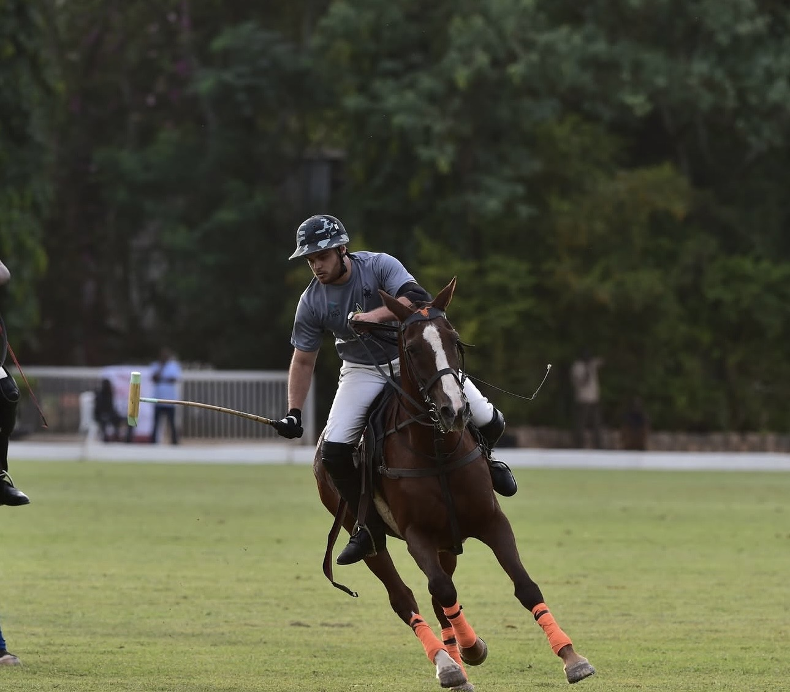
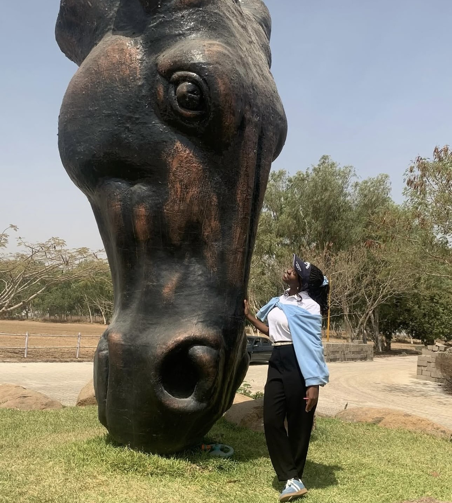
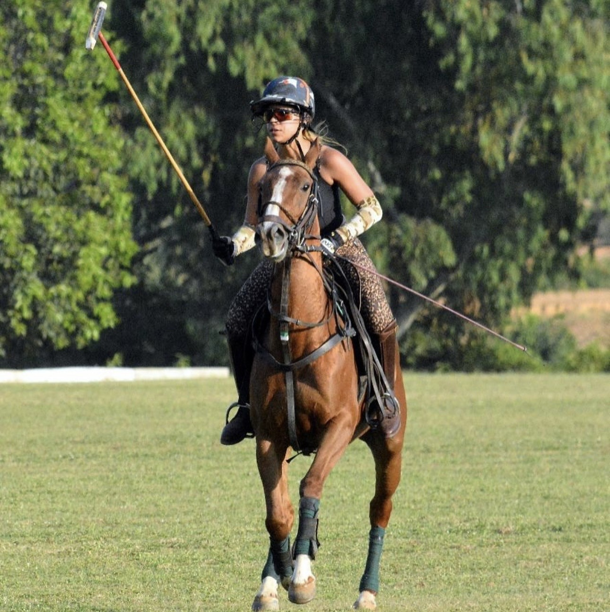
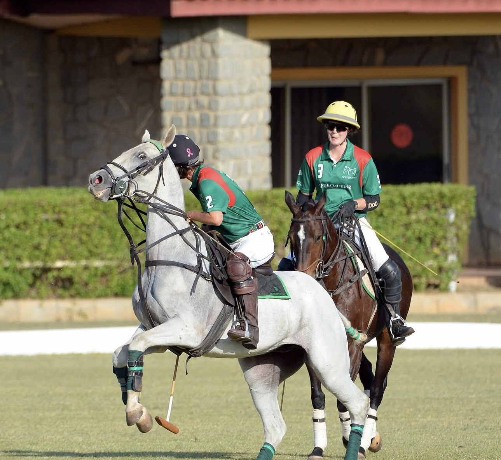
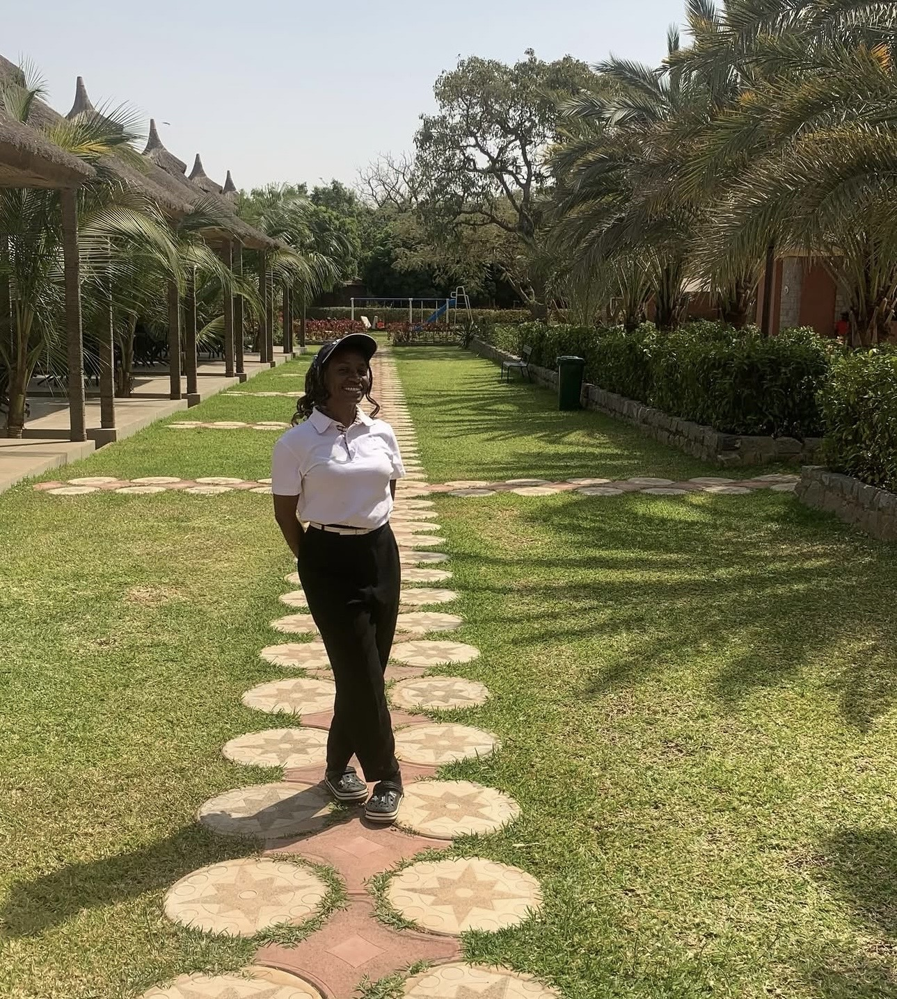

All Levels
Riding Academy
Beginner-to-advanced polo and recreational tuition in our arena sand school.

Equestrian Centre
300 stables, professional fields, riding arenas and trekking trails — supported by veterinary care and specialist handlers.
Home / Equestrian
Horsemanship
Fifth Chukker is home to one of West Africa's most complete equestrian centres — a place built around the welfare and performance of the horse. From championship polo fields to purpose-built riding arenas, every facility is designed to world-class standards.
Sand and grass paddocks, specialist grooms and round-the-clock veterinary support ensure every horse is cared for with the attention it deserves — whether a seasoned polo pony or a gentle mount for a first ride.

Riding Programmes

Beginner-to-advanced polo and recreational tuition in our arena sand school.

Lessons, lunch and poolside relaxation in great company.

Pony rides and safe, fun, family-friendly horse experiences.

High-goal coaching for aspiring and seasoned players.

Guided trails across 3,000 hectares to the Kangimi Dam.
Boarding, sand and grass paddocks and specialist handlers.

Horse Care
Every horse at Fifth Chukker is supported by a dedicated team of professionals — from on-site veterinary care to expert grooms who know each animal by name. Our paddocks, stables and handling facilities are built to keep horses healthy, content and ready to ride.
Our Promise
Championship fields, riding arenas and 300 stables maintained to the highest standards.
Professional coaches, grooms and veterinary staff devoted to horse and rider alike.
From a child's first pony ride to high-goal polo — we nurture riders for life.
Saddle Up
Spend a day in the saddle — lessons, treks and pony rides for every level of rider.